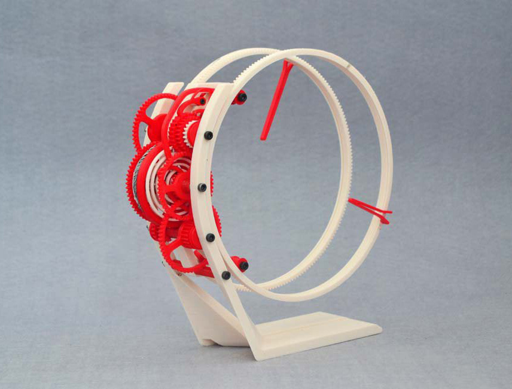
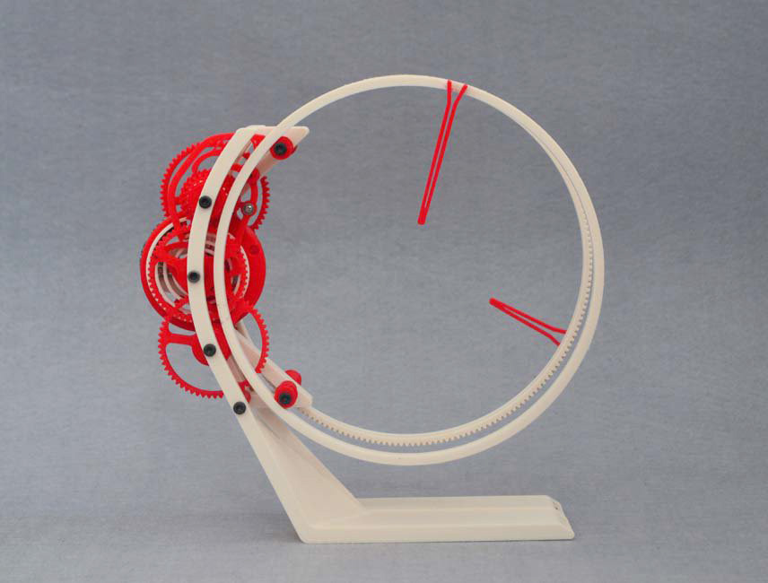
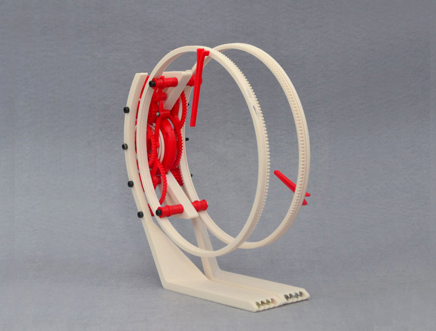
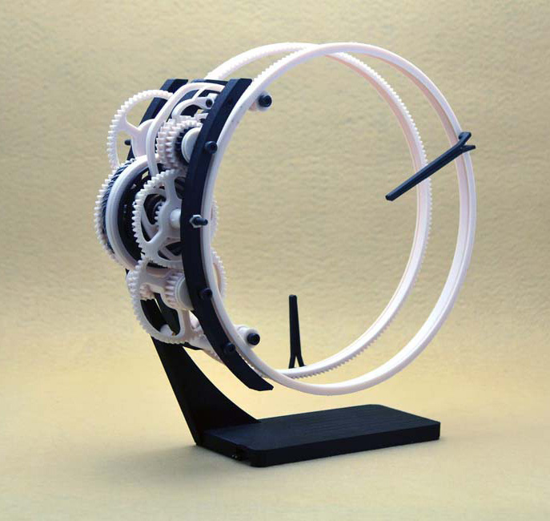
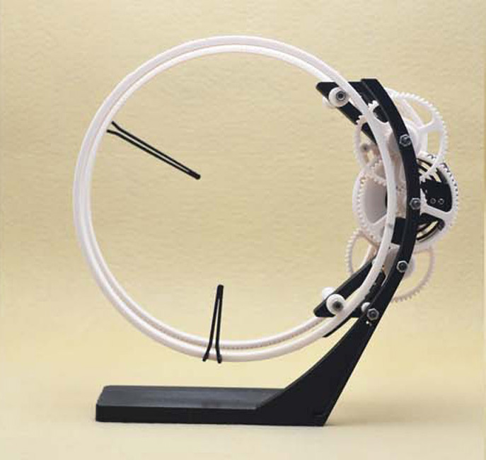
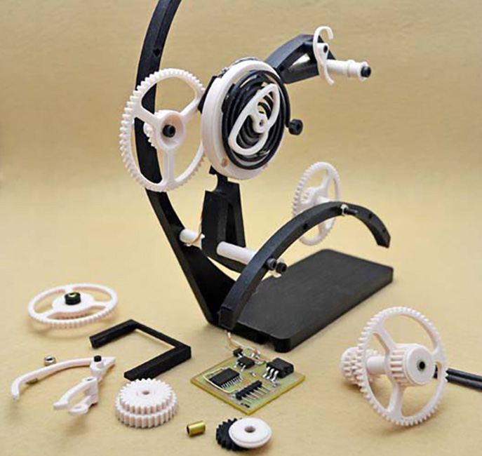
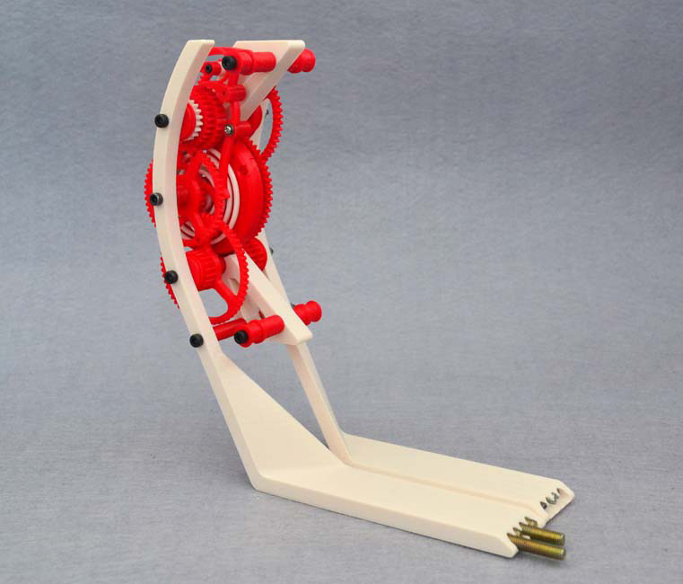
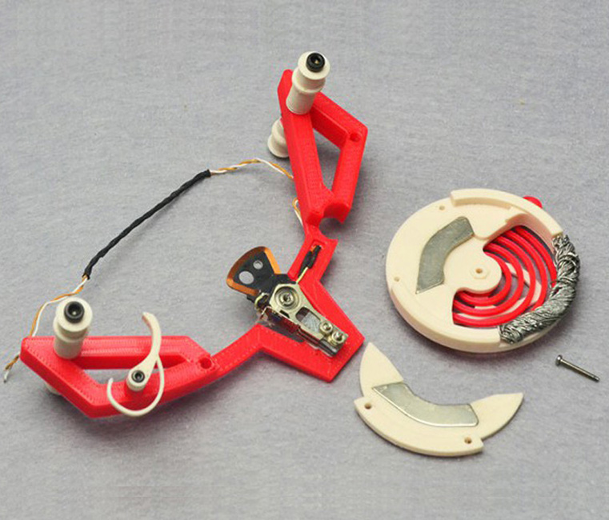
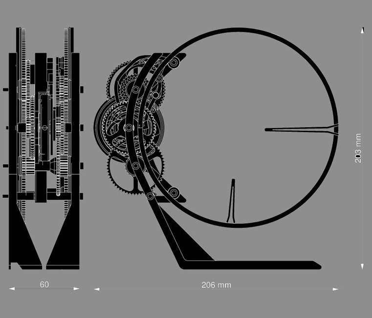
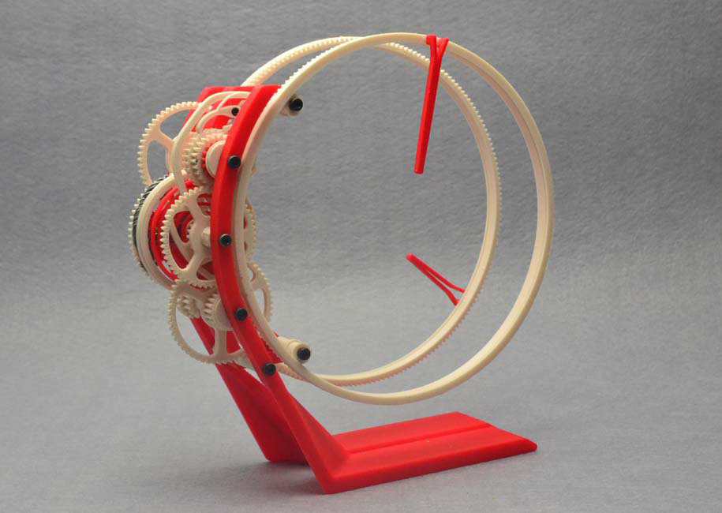
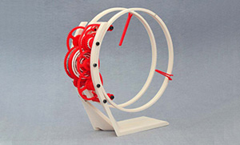
The torlo was born out of the idea of using a simple oscillating motor as a power source. The Voice coil of a scarp laptop HDD fit the bill nicely. The Voice coil with its powerful magnets has enough brunt to push a bunch of 3d printed gears .The basic idea of the torlo was adapted from the previous holo clock and taken further. The gears of the clock hang to one side and the rings to the other side of the frame. The voice coil is located in the center of the drive train and is driven by an attiny pulsing it every 2 seconds. The balance wheel when pulsed pushes a cam and a ratchet to turn the clock 2 seconds further. Rest of the clock is a simple drive train driving the minute and hour rings which display the time..I started with the idea of not using any kind of electronics and just have a contact breaker to make the coil oscillate. My first experiment with that setup worked well but the contacts just kept wearing out and the coil stopped oscillating within a few minutes. Also the timing was not very regular. Eventually i gave up and decided to use a hall sensor and a attiny to oscillate it precisely. But then I hit another snag. The frequency of oscillation was largely dependent on the balance wheels mass and the spring constant of the hairspring ( which was impossible to calculate for a printed part ). After experimenting with a lot of different spring thicknesses and balance wheel masses i could only get the wheel to oscillate at a frequency of 3.5hz without increase the size of the balance wheel substantially. Ultimately i ended up just pulsing the coil at every 2 second with a on time of 40 milliseconds just to give the balance wheel enough force to push the ratchet with one teeth forward. This also kept the coil running cool and consuming less power. It also sounds less crazy lying on the desk. The attiny can be easily replaced now with a 2 hz oscillating circuit but it is much easier with a msc to set the time and have very low part count.